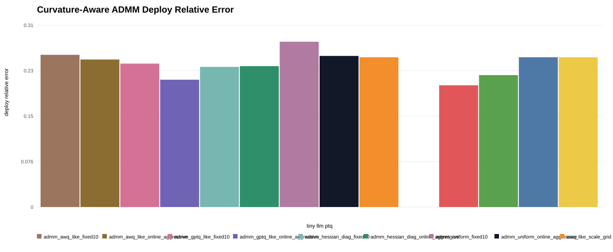
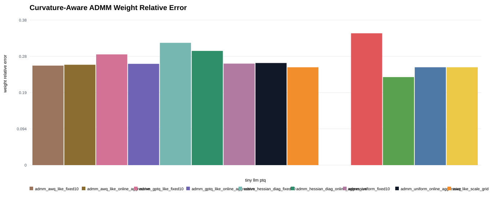
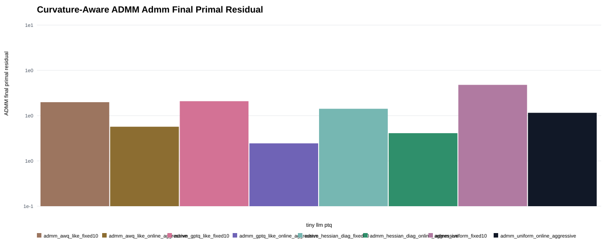
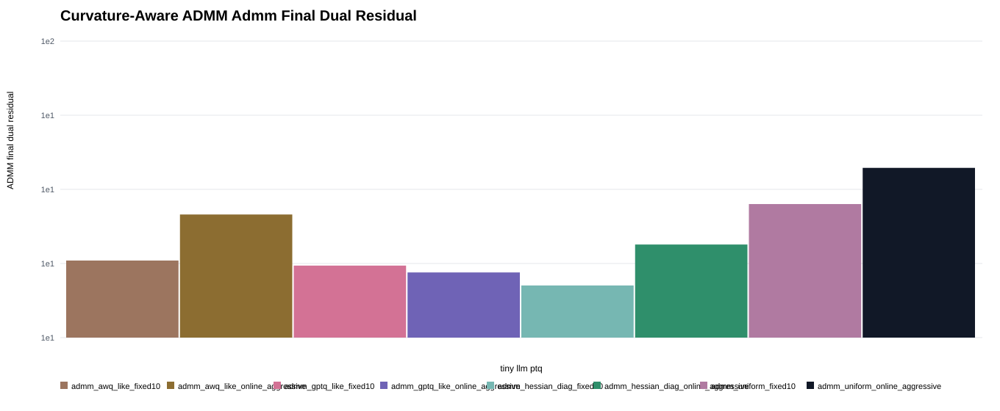
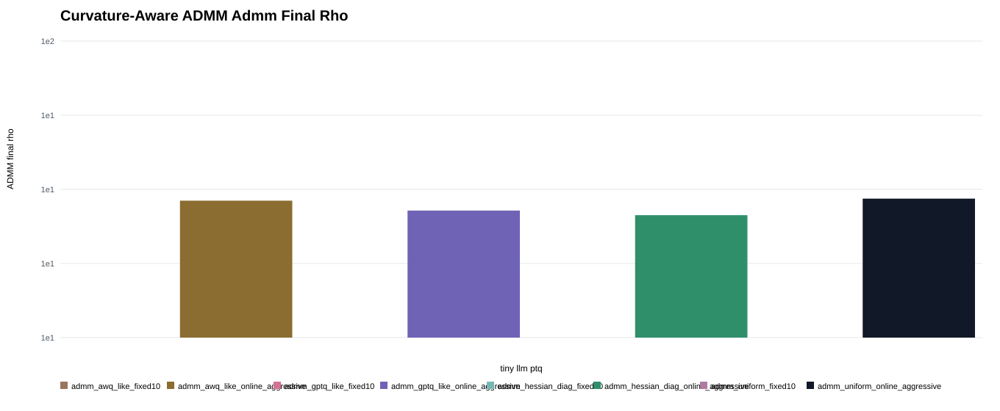
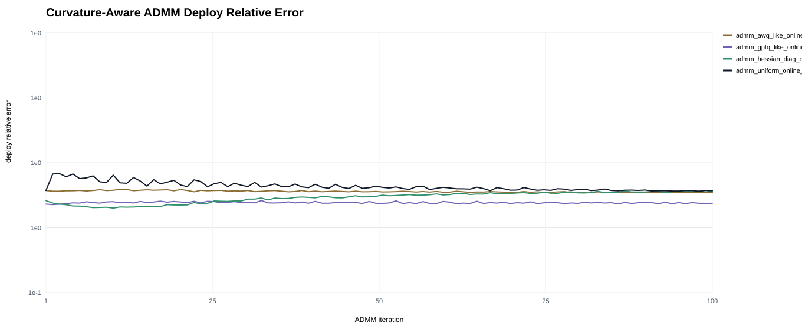
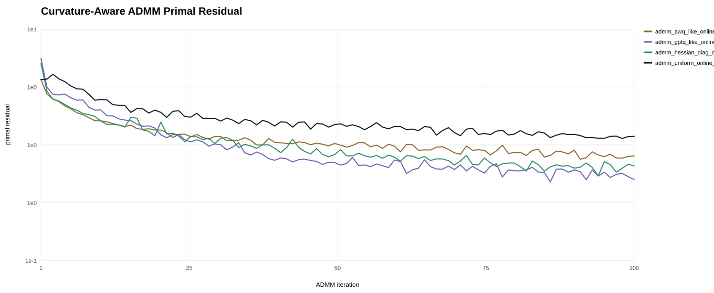
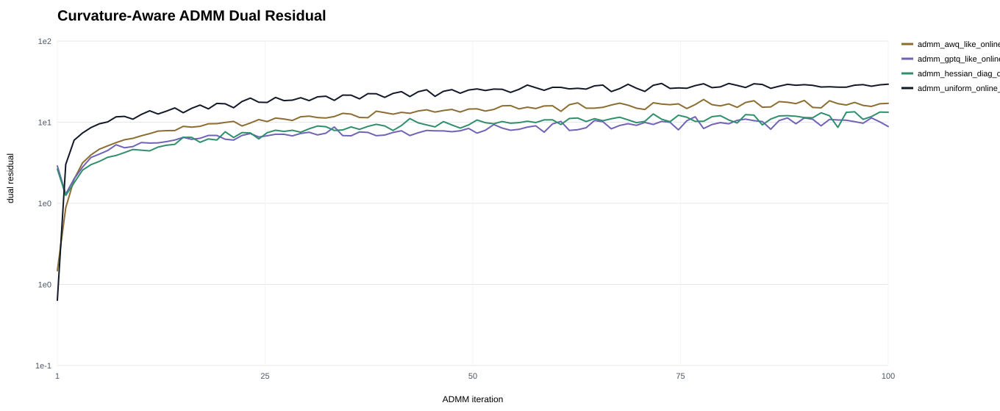
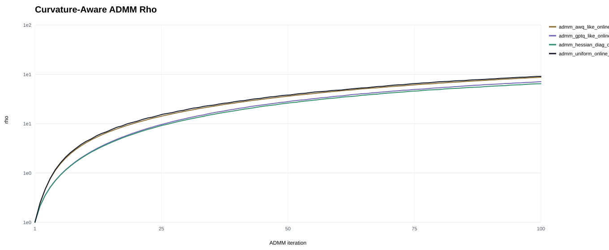

Curvature-Aware Online ADMM PTQ
ADMM variants with uniform, Hessian-diagonal, GPTQ-like, and AWQ-like quantized updates compared to local PTQ proxy baselines.
Curvature Admm Deploy Rel Error

Curvature Admm Weight Rel Error

Curvature Admm Final Primal

Curvature Admm Final Dual

Curvature Admm Final Rho

Curvature Admm Deploy Rel Error Seed0

Curvature Admm Primal Norm Seed0

Curvature Admm Dual Norm Seed0

Curvature Admm Rho Seed0

Grouped Metrics
| method | family | z_mode | deploy_rel_error | weight_rel_error | final_primal | final_dual | final_rho |
|---|---|---|---|---|---|---|---|
| fp16_reference | proxy_baseline | 0 | 0 | ||||
| gptq_like_sequential | proxy_baseline | 0.2049 | 0.3431 | ||||
| admm_gptq_like_online_aggressive | curvature_admm | gptq_like | 0.2142 | 0.2636 | 0.4942 | 16.59 | 26.82 |
| hessian_diag_clip | proxy_baseline | 0.222 | 0.2291 | ||||
| admm_hessian_diag_fixed10 | curvature_admm | hessian_diag | 0.2358 | 0.3182 | 1.191 | 14.99 | 10 |
| admm_hessian_diag_online_aggressive | curvature_admm | hessian_diag | 0.2371 | 0.2972 | 0.6403 | 20.6 | 25.88 |
| admm_gptq_like_fixed10 | curvature_admm | gptq_like | 0.2413 | 0.2882 | 1.444 | 17.49 | 10 |
| admm_awq_like_online_aggressive | curvature_admm | awq_like | 0.2482 | 0.2612 | 0.7545 | 26.02 | 28.97 |
| awq_like_scale_grid | proxy_baseline | 0.252 | 0.2547 | ||||
| rtn_per_channel | proxy_baseline | 0.252 | 0.2547 | ||||
| smoothquant_like_scale_grid | proxy_baseline | 0.252 | 0.2547 | ||||
| admm_uniform_online_aggressive | curvature_admm | uniform | 0.2543 | 0.2657 | 1.075 | 37.37 | 29.42 |
| admm_awq_like_fixed10 | curvature_admm | awq_like | 0.2561 | 0.259 | 1.408 | 18.19 | 10 |
| admm_uniform_fixed10 | curvature_admm | uniform | 0.2782 | 0.2642 | 2.187 | 28.21 | 10 |